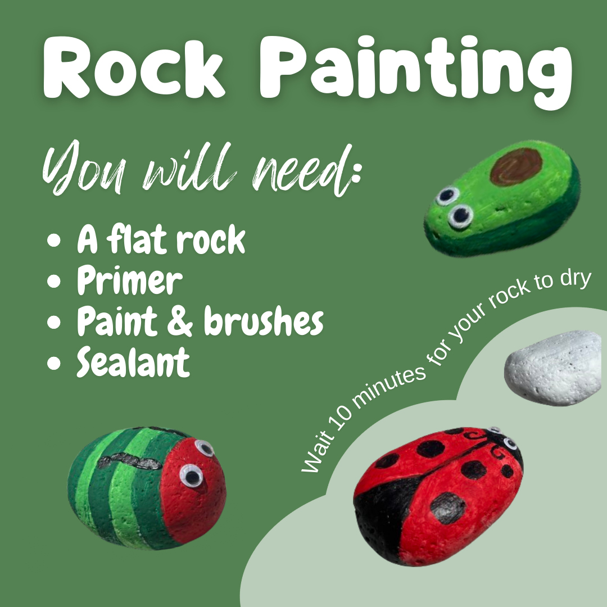

Have you ever had a million thoughts racing in your mind, way too many commitments, and just wanted to throw something? Yeah. We've all been there. We are able to counter these impulses through exersize and art--or by just throwing something. Here's a list of the activities most enjoyed by our students at PLHS as well as some others that help release emotions. Plus a list of things to throw.
Just some things you can throw. Crumpled paper, beachballs, sticks, pillows, clothes, etc. Just don't throw them at living things :) You can also scream into a pillow if you feel like it.
Just don't break anything. Please.
Art covers a LOT of topics: drawing (pencil, pen, charcoal...), painting, digital drawing, watercolor... you get it. These are all great to express your emotions. If you don't like messes, digital drawing can help--it also offers plenty of tools, like the fill bucket. Check out weavesilk.com if you just want to play around.
Listening to (and making) music is very comforting. When you can't describe what you're feeling, some songs will definitely resonate with you. This is the perfect activity since you can jam out and do work at the same time.
Crafting: grab some scissors, glue, paper/string/cardboard and you can make whatever the laws of physics allow. Scrapbooking, crocheting (personal favorite), knitting, and origami are a couple examples for you to test your creativity.
Make friendship bracelets with your friends, or make one for yourself! All you need is some thread and beads to throw together a bracelet--it can also double as a gift. And given you don't spill the beads, it is very easy to do! You don't even need beads; you can make it with just thread. Just have fun with it!
POTO and PLHS students have made 850+ (trying for 1000) paper cranes and they have proven very relaxing to make. Here's an instruction video on how to make them. Super easy to do and, like most of the items on this list, it can also be a gift.
If you don't know what to paint on your rock, you can look up images for inspiration, or base the design off the shape of your rock (like the avocado rock). Primer is optional if your rock is white.
Let your friends know you appreciate them. This can be through a text, hand-written letter, notes, or a craft. You could make them a playlist, offer to hang out or whatever you feel they would like. Be creative and kind!

Reading can transport you to a different world--perhaps one which you can relate to. You could also write a poem, short story, or list of things you appreciate. Or a list of characters you want to throw off a cliff. Your choice. You can write absolutely whatever you want, whenever you want!